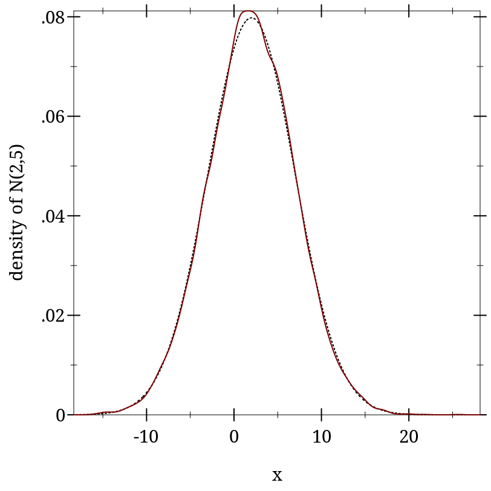
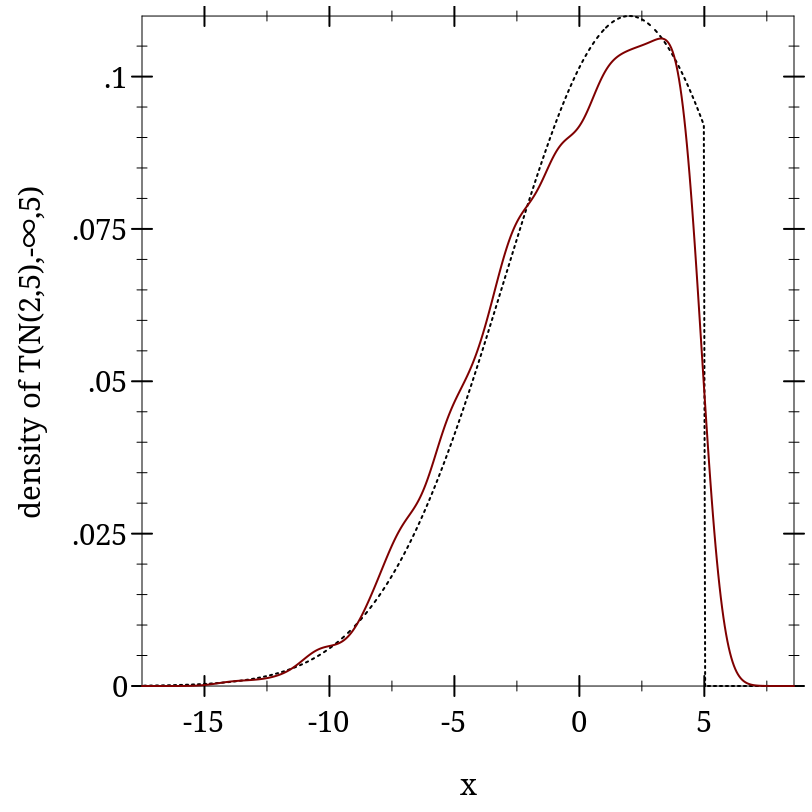
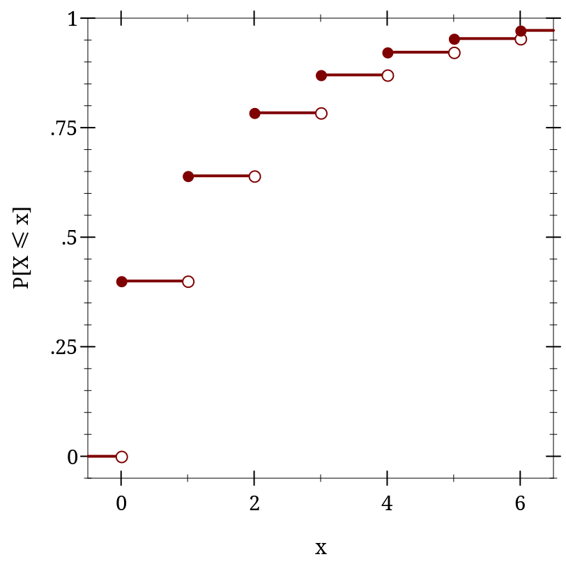

9.1 Distribution Objects
A distribution object represents a probability distribution over a common domain, such as the real numbers, integers, or a set of symbols. Their constructors correspond with distribution families, such as the family of normal distributions.
A distribution object, or a value of type dist, has a density function (a pdf) and a procedure to generate random samples. An ordered distribution object, or a value of type ordered-dist, additionally has a cumulative distribution function (a cdf), and its generalized inverse (an inverse cdf).
> (define d (normal-dist 2 5)) > (real-dist-prob d 0.5 1.0) 0.038651712749849576
> (define xs (sample d 10000))
> (fl (/ (count (λ (x) (and (1/2 . < . x) (x . <= . 1))) xs) (length xs))) 0.0391
> (plot (list (function (distribution-pdf d) #:color 0 #:style 'dot) (density xs)) #:x-label "x" #:y-label "density of N(2,5)") 
> (define d-trunc (truncated-dist d -inf.0 5)) > (real-dist-prob d-trunc 5 6) 0.0
> (real-dist-prob d-trunc 0.5 1.0) 0.0532578419490049
> (plot (list (function (distribution-pdf d-trunc) #:color 0 #:style 'dot) (density (sample d-trunc 1000))) #:x-label "x" #:y-label "density of T(N(2,5),-∞,5)") 
> (define d (geometric-dist 0.4))
> (plot (for/list ([i (in-range -1 7)]) (define i+1-ε (flprev (+ i 1.0))) (list (lines (list (vector i (cdf d i)) (vector i+1-ε (cdf d i+1-ε))) #:width 2) (points (list (vector i (cdf d i))) #:sym 'fullcircle5 #:color 1) (points (list (vector i+1-ε (cdf d i+1-ε))) #:sym 'fullcircle5 #:color 1 #:fill-color 0))) #:x-min -0.5 #:x-max 6.5 #:y-min -0.05 #:y-max 1 #:x-label "x" #:y-label "P[X ≤ x]") 
> (cdf d +inf.0) 1.0
> (cdf d 1.5) 0.64
> (cdf d -inf.0) 0.0
> (inv-cdf d (cdf d +inf.0)) +inf.0
> (inv-cdf d (cdf d 1.5)) 1.0
> (inv-cdf d (cdf d -inf.0)) 0.0
> (define d (normal-dist)) > (pdf d 40.0) 0.0
> (cdf d -40.0) 0.0
> (pdf d 40.0 #t) -800.9189385332047
> (cdf d -40.0 #t) -804.6084420137538
The functions lg+ and lgsum, as well as others in math/flonum, perform arithmetic on log probabilities.
> (pdf (gamma-dist -1 2) 2) +nan.0
> (sample (poisson-dist -2)) +nan.0
> (cdf (beta-dist 0 0) 1/2) +nan.0
> (inv-cdf (geometric-dist 1.1) 0.2) +nan.0